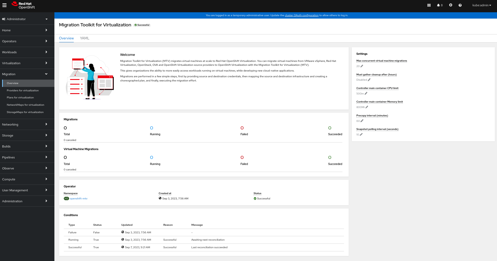

Installing and using Forklift 2.3
- About Forklift
- Prerequisites
- Installing and configuring the Forklift Operator
- Migrating virtual machines by using the OKD web console
- Migrating virtual machines from the command line
- Advanced migration options
- Upgrading Forklift
- Uninstalling Forklift
- Troubleshooting
About Forklift
You can use Forklift to migrate virtual machines from the following source providers to KubeVirt destination providers:
-
VMware vSphere
-
oVirt (oVirt)
-
OpenStack
-
Open Virtual Appliances (OVAs) that were created by VMware vSphere
-
Remote KubeVirt clusters
Migration using one or more Open Virtual Appliance (OVA) files as a source provider is a Technology Preview.
|
Migration using one or more Open Virtual Appliance (OVA) files as a source provider is a Technology Preview feature only. Technology Preview features are not supported with Red Hat production service level agreements (SLAs) and might not be functionally complete. Red Hat does not recommend using them in production. These features provide early access to upcoming product features, enabling customers to test functionality and provide feedback during the development process. For more information about the support scope of Red Hat Technology Preview features, see https://access.redhat.com/support/offerings/techpreview/. |
|
Migration using OpenStack source providers only supports VMs that use only Cinder volumes. |
About cold and warm migration
Forklift supports cold migration from:
-
VMware vSphere
-
oVirt (oVirt)
-
OpenStack
-
Remote KubeVirt clusters
Forklift supports warm migration from VMware vSphere and from oVirt.
|
Migration using OpenStack source providers only supports VMs that use only Cinder volumes. |
Cold migration
Cold migration is the default migration type. The source virtual machines are shut down while the data is copied.
Warm migration
Most of the data is copied during the precopy stage while the source virtual machines (VMs) are running.
Then the VMs are shut down and the remaining data is copied during the cutover stage.
The VMs are not shut down during the precopy stage.
The VM disks are copied incrementally using changed block tracking (CBT) snapshots. The snapshots are created at one-hour intervals by default. You can change the snapshot interval by updating the forklift-controller deployment.
|
You must enable CBT for each source VM and each VM disk. A VM can support up to 28 CBT snapshots. If the source VM has too many CBT snapshots and the |
The precopy stage runs until the cutover stage is started manually or is scheduled to start.
The VMs are shut down during the cutover stage and the remaining data is migrated. Data stored in RAM is not migrated.
You can start the cutover stage manually by using the Forklift console or you can schedule a cutover time in the Migration manifest.
Prerequisites
Review the following prerequisites to ensure that your environment is prepared for migration.
Software requirements
You must install compatible versions of OKD and KubeVirt.
Storage support and default modes
Forklift uses the following default volume and access modes for supported storage.
| Provisioner | Volume mode | Access mode |
|---|---|---|
kubernetes.io/aws-ebs |
Block |
ReadWriteOnce |
kubernetes.io/azure-disk |
Block |
ReadWriteOnce |
kubernetes.io/azure-file |
Filesystem |
ReadWriteMany |
kubernetes.io/cinder |
Block |
ReadWriteOnce |
kubernetes.io/gce-pd |
Block |
ReadWriteOnce |
kubernetes.io/hostpath-provisioner |
Filesystem |
ReadWriteOnce |
manila.csi.openstack.org |
Filesystem |
ReadWriteMany |
openshift-storage.cephfs.csi.ceph.com |
Filesystem |
ReadWriteMany |
openshift-storage.rbd.csi.ceph.com |
Block |
ReadWriteOnce |
kubernetes.io/rbd |
Block |
ReadWriteOnce |
kubernetes.io/vsphere-volume |
Block |
ReadWriteOnce |
|
If the KubeVirt storage does not support dynamic provisioning, you must apply the following settings:
See Enabling a statically-provisioned storage class for details on editing the storage profile. |
|
If your migration uses block storage and persistent volumes created with an EXT4 file system, increase the file system overhead in CDI to be more than 10%. The default overhead that is assumed by CDI does not completely include the reserved place for the root partition. If you do not increase the file system overhead in CDI by this amount, your migration might fail. |
|
When migrating from OpenStack or running a cold-migration from RHV to the OCP cluster that MTV is deployed on, the migration allocates persistent volumes without CDI. In these cases, you might need to adjust the file system overhead. If the configured file system overhead, which has a default value of 10%, is too low, the disk transfer will fail due to lack of space. In such a case, you would want to increase to increase the file system overhead. In some cases, however, you might want to decrease the file system overhead to reduce storage consumption. You can change the file system overhead by changing the value of the |
Network prerequisites
The following prerequisites apply to all migrations:
-
IP addresses, VLANs, and other network configuration settings must not be changed before or during migration. The MAC addresses of the virtual machines are preserved during migration.
-
The network connections between the source environment, the KubeVirt cluster, and the replication repository must be reliable and uninterrupted.
-
If you are mapping more than one source and destination network, you must create a network attachment definition for each additional destination network.
Ports
The firewalls must enable traffic over the following ports:
| Port | Protocol | Source | Destination | Purpose |
|---|---|---|---|---|
443 |
TCP |
OpenShift nodes |
VMware vCenter |
VMware provider inventory Disk transfer authentication |
443 |
TCP |
OpenShift nodes |
VMware ESXi hosts |
Disk transfer authentication |
902 |
TCP |
OpenShift nodes |
VMware ESXi hosts |
Disk transfer data copy |
| Port | Protocol | Source | Destination | Purpose |
|---|---|---|---|---|
443 |
TCP |
OpenShift nodes |
oVirt Engine |
oVirt provider inventory Disk transfer authentication |
443 |
TCP |
OpenShift nodes |
oVirt hosts |
Disk transfer authentication |
54322 |
TCP |
OpenShift nodes |
oVirt hosts |
Disk transfer data copy |
Source virtual machine prerequisites
The following prerequisites apply to all migrations:
-
ISO/CDROM disks must be unmounted.
-
Each NIC must contain one IPv4 and/or one IPv6 address.
-
The VM operating system must be certified and supported for use as a guest operating system with KubeVirt.
-
VM names must contain only lowercase letters (
a-z), numbers (0-9), or hyphens (-), up to a maximum of 253 characters. The first and last characters must be alphanumeric. The name must not contain uppercase letters, spaces, periods (.), or special characters. -
VM names must not duplicate the name of a VM in the KubeVirt environment.
Forklift automatically assigns a new name to a VM that does not comply with the rules.
Forklift makes the following changes when it automatically generates a new VM name:
-
Excluded characters are removed.
-
Uppercase letters are switched to lowercase letters.
-
Any underscore (
_) is changed to a dash (-).
This feature allows a migration to proceed smoothly even if someone entered a VM name that does not follow the rules.
-
oVirt prerequisites
The following prerequisites apply to oVirt migrations:
-
You must use a compatible version of oVirt.
-
You must have the Engine CA certificate, unless it was replaced by a third-party certificate, in which case, specify the Engine Apache CA certificate.
You can obtain the Engine CA certificate by navigating to https://<engine_host>/ovirt-engine/services/pki-resource?resource=ca-certificate&format=X509-PEM-CA in a browser.
-
If you are migrating a virtual machine with a direct LUN disk, ensure that the nodes in the KubeVirt destination cluster that the VM is expected to run on can access the backend storage.
|
OpenStack prerequisites
The following prerequisites apply to OpenStack migrations:
-
You must use a compatible version of OpenStack.
|
Migration using OpenStack source providers only supports VMs that use only Cinder volumes. |
Additional authentication methods for migrations with OpenStack source providers
Forklift versions 2.5 and later support the following authentication methods for migrations with OpenStack source providers in addition to the standard username and password credential set:
-
Token authentication
-
Application credential authentication
You can use these methods to migrate virtual machines with OpenStack source providers using the CLI the same way you migrate other virtual machines, except for how you prepare the Secret manifest.
Using token authentication with an OpenStack source provider
You can use token authentication, instead of username and password authentication, when you create an OpenStack source provider.
Forklift supports both of the following types of token authentication:
-
Token with user ID
-
Token with user name
For each type of token authentication, you need to use data from OpenStack to create a Secret manifest.
Have an OpenStack account.
-
In the dashboard of the OpenStack web console, click Project > API Access.
-
Expand Download OpenStack RC file and click OpenStack RC file.
The file that is downloaded, referred to here as
<openstack_rc_file>, includes the following fields used for token authentication:OS_AUTH_URL OS_PROJECT_ID OS_PROJECT_NAME OS_DOMAIN_NAME OS_USERNAME -
To get the data needed for token authentication, run the following command:
$ openstack token issueThe output, referred to here as
<openstack_token_output>, includes thetoken,userID, andprojectIDthat you need for authentication using a token with user ID. -
Create a
Secretmanifest similar to the following:-
For authentication using a token with user ID:
cat << EOF | oc apply -f - apiVersion: v1 kind: Secret metadata: name: openstack-secret-tokenid namespace: openshift-mtv labels: createdForProviderType: openstack type: Opaque stringData: authType: token token: <token_from_openstack_token_output> projectID: <projectID_from_openstack_token_output> userID: <userID_from_openstack_token_output> url: <OS_AUTH_URL_from_openstack_rc_file> EOF -
For authentication using a token with user name:
cat << EOF | oc apply -f - apiVersion: v1 kind: Secret metadata: name: openstack-secret-tokenname namespace: openshift-mtv labels: createdForProviderType: openstack type: Opaque stringData: authType: token token: <token_from_openstack_token_output> domainName: <OS_DOMAIN_NAME_from_openstack_rc_file> projectName: <OS_PROJECT_NAME_from_openstack_rc_file> username: <OS_USERNAME_from_openstack_rc_file> url: <OS_AUTH_URL_from_openstack_rc_file> EOF
-
-
Continue migrating your virtual machine according to the procedure in Migrating virtual machines, starting with step 2, "Create a
Providermanifest for the source provider."
Using application credential authentication with an OpenStack source provider
You can use application credential authentication, instead of username and password authentication, when you create an OpenStack source provider.
Forklift supports both of the following types of application credential authentication:
-
Application credential ID
-
Application credential name
For each type of application credential authentication, you need to use data from OpenStack to create a Secret manifest.
You have an OpenStack account.
-
In the dashboard of the OpenStack web console, click Project > API Access.
-
Expand Download OpenStack RC file and click OpenStack RC file.
The file that is downloaded, referred to here as
<openstack_rc_file>, includes the following fields used for application credential authentication:OS_AUTH_URL OS_PROJECT_ID OS_PROJECT_NAME OS_DOMAIN_NAME OS_USERNAME -
To get the data needed for application credential authentication, run the following command:
$ openstack application credential create --role member --role reader --secret redhat forkliftThe output, referred to here as
<openstack_credential_output>, includes:-
The
idandsecretthat you need for authentication using an application credential ID -
The
nameandsecretthat you need for authentication using an application credential name
-
-
Create a
Secretmanifest similar to the following:-
For authentication using the application credential ID:
cat << EOF | oc apply -f - apiVersion: v1 kind: Secret metadata: name: openstack-secret-appid namespace: openshift-mtv labels: createdForProviderType: openstack type: Opaque stringData: authType: applicationcredential applicationCredentialID: <id_from_openstack_credential_output> applicationCredentialSecret: <secret_from_openstack_credential_output> url: <OS_AUTH_URL_from_openstack_rc_file> EOF -
For authentication using the application credential name:
cat << EOF | oc apply -f - apiVersion: v1 kind: Secret metadata: name: openstack-secret-appname namespace: openshift-mtv labels: createdForProviderType: openstack type: Opaque stringData: authType: applicationcredential applicationCredentialName: <name_from_openstack_credential_output> applicationCredentialSecret: <secret_from_openstack_credential_output> domainName: <OS_DOMAIN_NAME_from_openstack_rc_file> username: <OS_USERNAME_from_openstack_rc_file> url: <OS_AUTH_URL_from_openstack_rc_file> EOF
-
-
Continue migrating your virtual machine according to the procedure in Migrating virtual machines, starting with step 2, "Create a
Providermanifest for the source provider."
VMware prerequisites
It is strongly recommended to create a VDDK image to accelerate migrations. For more information, see Creating a VDDK image.
The following prerequisites apply to VMware migrations:
-
You must use a compatible version of VMware vSphere.
-
You must be logged in as a user with at least the minimal set of VMware privileges.
-
You must install VMware Tools on all source virtual machines (VMs).
-
The VM operating system must be certified and supported for use as a guest operating system with KubeVirt and for conversion to KVM with
virt-v2v. -
If you are running a warm migration, you must enable changed block tracking (CBT) on the VMs and on the VM disks.
-
You must obtain the SHA-1 fingerprint of the vCenter host.
-
If you are migrating more than 10 VMs from an ESXi host in the same migration plan, you must increase the NFC service memory of the host.
-
It is strongly recommended to disable hibernation because Forklift does not support migrating hibernated VMs.
|
In the event of a power outage, data might be lost for a VM with disabled hibernation. However, if hibernation is not disabled, migration will fail |
|
Neither Forklift nor OpenShift Virtualization support conversion of Btrfs for migrating VMs from VMWare. |
VMware privileges
The following minimal set of VMware privileges is required to migrate virtual machines to KubeVirt with the Forklift.
| Privilege | Description | ||
|---|---|---|---|
|
|||
|
Allows powering off a powered-on virtual machine. This operation powers down the guest operating system. |
||
|
Allows powering on a powered-off virtual machine and resuming a suspended virtual machine. |
||
|
|||
|
Allows opening a disk on a virtual machine for random read and write access. Used mostly for remote disk mounting. |
||
|
Allows operations on files associated with a virtual machine, including VMX, disks, logs, and NVRAM. |
||
|
Allows opening a disk on a virtual machine for random read access. Used mostly for remote disk mounting. |
||
|
Allows read operations on files associated with a virtual machine, including VMX, disks, logs, and NVRAM. |
||
|
Allows write operations on files associated with a virtual machine, including VMX, disks, logs, and NVRAM. |
||
|
Allows cloning of a template. |
||
|
Allows cloning of an existing virtual machine and allocation of resources. |
||
|
Allows creation of a new template from a virtual machine. |
||
|
Allows customization of a virtual machine’s guest operating system without moving the virtual machine. |
||
|
Allows deployment of a virtual machine from a template. |
||
|
Allows marking an existing powered-off virtual machine as a template. |
||
|
Allows marking an existing template as a virtual machine. |
||
|
Allows creation, modification, or deletion of customization specifications. |
||
|
Allows promote operations on a virtual machine’s disks. |
||
|
Allows reading a customization specification. |
||
|
|||
|
Allows creation of a snapshot from the virtual machine’s current state. |
||
|
Allows removal of a snapshot from the snapshot history. |
||
Creating a VDDK image
Forklift uses the VMware Virtual Disk Development Kit (VDDK) SDK to accelerate transferring virtual disks from VMware vSphere. Therefore, creating a VDDK image, although optional, is highly recommended.
To make use of this feature, you download the VMware Virtual Disk Development Kit (VDDK), build a VDDK image, and push the VDDK image to your image registry.
The VDDK package contains symbolic links, therefore, the procedure of creating a VDDK image must be performed on a file system that preserves symbolic links (symlinks).
|
Storing the VDDK image in a public registry might violate the VMware license terms. |
-
podmaninstalled. -
You are working on a file system that preserves symbolic links (symlinks).
-
If you are using an external registry, KubeVirt must be able to access it.
-
Create and navigate to a temporary directory:
$ mkdir /tmp/<dir_name> && cd /tmp/<dir_name> -
In a browser, navigate to the VMware VDDK version 8 download page.
-
Select version 8.0.1 and click Download.
In order to migrate to KubeVirt 4.12, download VDDK version 7.0.3.2 from the VMware VDDK version 7 download page.
-
Save the VDDK archive file in the temporary directory.
-
Extract the VDDK archive:
$ tar -xzf VMware-vix-disklib-<version>.x86_64.tar.gz -
Create a
Dockerfile:$ cat > Dockerfile <<EOF FROM registry.access.redhat.com/ubi8/ubi-minimal USER 1001 COPY vmware-vix-disklib-distrib /vmware-vix-disklib-distrib RUN mkdir -p /opt ENTRYPOINT ["cp", "-r", "/vmware-vix-disklib-distrib", "/opt"] EOF -
Build the VDDK image:
$ podman build . -t <registry_route_or_server_path>/vddk:<tag> -
Push the VDDK image to the registry:
$ podman push <registry_route_or_server_path>/vddk:<tag> -
Ensure that the image is accessible to your KubeVirt environment.
Obtaining the SHA-1 fingerprint of a vCenter host
You must obtain the SHA-1 fingerprint of a vCenter host in order to create a Secret CR.
-
Run the following command:
$ openssl s_client \ -connect <vcenter_host>:443 \ (1) < /dev/null 2>/dev/null \ | openssl x509 -fingerprint -noout -in /dev/stdin \ | cut -d '=' -f 21 Specify the IP address or FQDN of the vCenter host. Example output01:23:45:67:89:AB:CD:EF:01:23:45:67:89:AB:CD:EF:01:23:45:67
Increasing the NFC service memory of an ESXi host
If you are migrating more than 10 VMs from an ESXi host in the same migration plan, you must increase the NFC service memory of the host. Otherwise, the migration will fail because the NFC service memory is limited to 10 parallel connections.
-
Log in to the ESXi host as root.
-
Change the value of
maxMemoryto1000000000in/etc/vmware/hostd/config.xml:... <nfcsvc> <path>libnfcsvc.so</path> <enabled>true</enabled> <maxMemory>1000000000</maxMemory> <maxStreamMemory>10485760</maxStreamMemory> </nfcsvc> ... -
Restart
hostd:# /etc/init.d/hostd restartYou do not need to reboot the host.
Open Virtual Appliance (OVA) prerequisites
The following prerequisites apply to Open Virtual Appliance (OVA) file migrations:
-
All OVA files are created by VMware vSphere.
|
Migration of OVA files that were not created by VMware vSphere but are compatible with vSphere might succeed. However, migration of such files is not supported by Forklift. Forklift supports only OVA files created by VMware vSphere. |
-
The OVA files are in one or more folders under an NFS shared directory in one of the following structures:
-
In one or more compressed Open Virtualization Format (OVF) packages that hold all the VM information.
The filename of each compressed package must have the
.ovaextension. Several compressed packages can be stored in the same folder.When this structure is used, Forklift scans the root folder and the first-level subfolders for compressed packages.
For example, if the NFS share is,
/nfs, then:
The folder/nfsis scanned.
The folder/nfs/subfolder1is scanned.
But,/nfs/subfolder1/subfolder2is not scanned. -
In extracted OVF packages.
When this structure is used, Forklift scans the root folder, first-level subfolders, and second-level subfolders for extracted OVF packages. However, there can be only one
.ovffile in a folder. Otherwise, the migration will fail.For example, if the NFS share is,
/nfs, then:
The OVF file/nfs/vm.ovfis scanned.
The OVF file/nfs/subfolder1/vm.ovfis scanned.
The OVF file/nfs/subfolder1/subfolder2/vm.ovfis scanned.
But, the OVF file/nfs/subfolder1/subfolder2/subfolder3/vm.ovfis not scanned.
-
Software compatibility guidelines
You must install compatible software versions.
| Forklift | OKD | KubeVirt | VMware vSphere | oVirt | OpenStack |
|---|---|---|---|---|---|
2.3.0 |
4.12 or later |
4.12 or later |
6.5 or later |
4.4 SP1 or later |
16.1 or later |
|
Migration from oVirt 4.3
MTV 2.5 was tested only with oVirt (RHV) 4.4 SP1. Migration from oVirt (oVirt) 4.3 has not been tested with Forklift 2.3. As oVirt 4.3 lacks the improvements that were introduced in oVirt 4.4 for Forklift, and new features were not tested with oVirt 4.3, migrations from oVirt 4.3 may not function at the same level as migrations from oVirt 4.4, with some functionality may be missing. Therefore, it is recommended to upgrade oVirt to the supported version above before the migration to KubeVirt. However, migrations from oVirt 4.3.11 were tested with Forklift 2.3, and may work in practice in many environments using Forklift 2.3. In this case, we advise upgrading oVirt Manager (RHVM) to the previously mentioned supported version before the migration to KubeVirt. |
|
Deployment of MTV 2.5.3 and later is enabled on OpenShift Kubernetes Engine (OKE). For more information, see About OpenShift Kubernetes Engine. |
OpenShift Operator Life Cycles
For more information about the software maintenance Life Cycle classifications for Operators shipped by Red Hat for use with OpenShift Container Platform, see OpenShift Operator Life Cycles.
Installing and configuring the Forklift Operator
You can install the Forklift Operator by using the OKD web console or the command line interface (CLI).
In Forklift version 2.4 and later, the Forklift Operator includes the Forklift plugin for the OKD web console.
After you install the Forklift Operator by using either the OKD web console or the CLI, you can configure the Operator.
Installing the Forklift Operator by using the OKD web console
You can install the Forklift Operator by using the OKD web console.
-
OKD 4.10 or later installed.
-
KubeVirt Operator installed on an OpenShift migration target cluster.
-
You must be logged in as a user with
cluster-adminpermissions.
-
In the OKD web console, click Operators → OperatorHub.
-
Use the Filter by keyword field to search for forklift-operator.
The Forklift Operator is a Community Operator. Red Hat does not support Community Operators.
-
Click Migration Toolkit for Virtualization Operator and then click Install.
-
Click Create ForkliftController when the button becomes active.
-
Click Create.
Your ForkliftController appears in the list that is displayed.
-
Click Workloads → Pods to verify that the Forklift pods are running.
-
Click Operators → Installed Operators to verify that Migration Toolkit for Virtualization Operator appears in the konveyor-forklift project with the status Succeeded.
When the plugin is ready you will be prompted to reload the page. The Migration menu item is automatically added to the navigation bar, displayed on the left of the OKD web console.
Installing the Forklift Operator from the command line interface
You can install the Forklift Operator from the command line interface (CLI).
-
OKD 4.10 or later installed.
-
KubeVirt Operator installed on an OpenShift migration target cluster.
-
You must be logged in as a user with
cluster-adminpermissions.
-
Create the konveyor-forklift project:
$ cat << EOF | kubectl apply -f - apiVersion: project.openshift.io/v1 kind: Project metadata: name: konveyor-forklift EOF -
Create an
OperatorGroupCR calledmigration:$ cat << EOF | kubectl apply -f - apiVersion: operators.coreos.com/v1 kind: OperatorGroup metadata: name: migration namespace: konveyor-forklift spec: targetNamespaces: - konveyor-forklift EOF -
Create a
SubscriptionCR for the Operator:$ cat << EOF | kubectl apply -f - apiVersion: operators.coreos.com/v1alpha1 kind: Subscription metadata: name: forklift-operator namespace: konveyor-forklift spec: channel: development installPlanApproval: Automatic name: forklift-operator source: community-operators sourceNamespace: openshift-marketplace startingCSV: "konveyor-forklift-operator.2.3.0" EOF -
Create a
ForkliftControllerCR:$ cat << EOF | kubectl apply -f - apiVersion: forklift.konveyor.io/v1beta1 kind: ForkliftController metadata: name: forklift-controller namespace: konveyor-forklift spec: olm_managed: true EOF -
Verify that the Forklift pods are running:
$ kubectl get pods -n konveyor-forkliftExample outputNAME READY STATUS RESTARTS AGE forklift-api-bb45b8db4-cpzlg 1/1 Running 0 6m34s forklift-controller-7649db6845-zd25p 2/2 Running 0 6m38s forklift-must-gather-api-78fb4bcdf6-h2r4m 1/1 Running 0 6m28s forklift-operator-59c87cfbdc-pmkfc 1/1 Running 0 28m forklift-ui-plugin-5c5564f6d6-zpd85 1/1 Running 0 6m24s forklift-validation-7d84c74c6f-fj9xg 1/1 Running 0 6m30s forklift-volume-populator-controller-85d5cb64b6-mrlmc 1/1 Running 0 6m36s
Configuring the Forklift Operator
You can configure the following settings of the Forklift Operator using either the CLI or the user interface.
-
Maximum number of virtual machines (VMs) per plan that can be migrated simultaneously
-
How long
must gatherreports are retained before being automatically deleted -
CPU limit allocated to the main controller container
-
Memory limit allocated to the main controller container
-
Interval at which a new snapshot is requested before initiating a warm migration
-
Frequency with which the system checks the status of snapshot creation or removal during a warm migration
-
Percentage of space in persistent volumes allocated as file system overhead when the
storageclassisfilesystem(CLI only)
These settings are configured by changing the default of the appropriate parameter in the spec part of the forklift-controller CR.
The procedure for configuring these settings using the user interface is presented in Configuring MTV settings. The procedure for configuring these settings using the CLI is presented following.
-
Change a parameter’s value in the
specportion of theforklift-controllerCR by adding the label and value as follows:
spec: label: value (1)
| 1 | Labels you can configure using the CLI are shown in the table that follows, along with a description of each label and its default value. |
| Label | Description | Default value |
|---|---|---|
|
The maximum number of VMs per plan that can be migrated simultaneously. |
|
|
The duration in hours for retaining |
|
|
The CPU limit allocated to the main controller container. |
|
|
The memory limit allocated to the main controller container. |
|
|
The interval in minutes at which a new snapshot is requested before initiating a warm migration. |
|
|
The frequency in seconds with which the system checks the status of snapshot creation or removal during a warm migration. |
|
|
Percentage of space in persistent volumes allocated as file system overhead when the |
|
|
Fixed amount of additional space allocated in persistent block volumes. This setting is applicable for any |
|
Migrating virtual machines by using the OKD web console
You can migrate virtual machines (VMs) to KubeVirt by using the OKD web console.
|
You must ensure that all prerequisites are met. VMware only: You must have the minimal set of VMware privileges. VMware only: Creating a VMware Virtual Disk Development Kit (VDDK) image will increase migration speed. |
The MTV user interface
The Forklift user interface is integrated into the OKD web console.
In the left-hand panel, you can choose a page related to a component of the migration progress, for example, Providers for Migration, or, if you are an administrator, you can choose Overview, which contains information about migrations and lets you configure Forklift settings.

In pages related to components, you can click on the Projects list, which is in the upper-left portion of the page, and see which projects (namespaces) you are allowed to work with.
-
If you are an administrator, you can see all projects.
-
If you are a non-administrator, you can see only the projects that you have permissions to work with.
The MTV Overview page
The Forklift Overview page displays system-wide information about migrations and a list of Settings you can change.
If you have Administrator privileges, you can access the Overview page by clicking Migration → Overview in the OKD web console.
The Overview page displays the following information:
-
Migrations: The number of migrations performed using Forklift:
-
Total
-
Running
-
Failed
-
Succeeded
-
Canceled
-
-
Virtual Machine Migrations: The number of VMs migrated using Forklift:
-
Total
-
Running
-
Failed
-
Succeeded
-
Canceled
-
-
Operator: The namespace on which the Forklift Operator is deployed and the status of the Operator.
-
Conditions: Status of the Forklift Operator:
-
Failure: Last failure.
Falseindicates no failure since deployment. -
Running: Whether the Operator is currently running and waiting for the next reconciliation.
-
Successful: Last successful reconciliation.
-
Configuring MTV settings
If you have Administrator privileges, you can access the Overview page and change the following settings in it:
| Setting | Description | Default value |
|---|---|---|
Max concurrent virtual machine migrations |
The maximum number of VMs per plan that can be migrated simultaneously |
20 |
Must gather cleanup after (hours) |
The duration for retaining |
Disabled |
Controller main container CPU limit |
The CPU limit allocated to the main controller container |
500 m |
Controller main container Memory limit |
The memory limit allocated to the main controller container |
800 Mi |
Precopy internal (minutes) |
The interval at which a new snapshot is requested before initiating a warm migration |
60 |
Snapshot polling interval (seconds) |
The frequency with which the system checks the status of snapshot creation or removal during a warm migration |
10 |
-
In the OKD web console, click Migration → Overview. The Settings list is on the right-hand side of the page.
-
In the Settings list, click the Edit icon of the setting you want to change.
-
Choose a setting from the list.
-
Click Save.
Adding providers
You can add source providers and destination providers for a virtual machine migration by using the OKD web console.
Adding source providers
You can use Forklift to migrate VMs from the following source providers:
-
VMware vSphere
-
oVirt
-
OpenStack
-
Open Virtual Appliances (OVAs) that were created by VMware vSphere
-
KubeVirt
You can add a source provider by using the OKD web console.
Adding a VMware vSphere source provider
You can add a VMware vSphere source provider by using the OKD web console.
|
EMS enforcement is disabled for migrations with VMware vSphere source providers in order to enable migrations from versions of vSphere that are supported by Forklift but do not comply with the 2023 FIPS requirements. Therefore, users should consider whether migrations from vSphere source providers risk their compliance with FIPS. Supported versions of vSphere are specified in Software compatibility guidelines. |
-
VMware Virtual Disk Development Kit (VDDK) image in a secure registry that is accessible to all clusters.
-
In the OKD web console, click Migration → Providers for virtualization.
-
Click Create Provider.
-
Click vSphere.
-
Specify the following fields:
-
Provider resource name: Name of the source provider.
-
URL: URL of the SDK endpoint of the vCenter on which the source VM is mounted. Ensure that the URL includes the
sdkpath, usually/sdk. For example,https://vCenter-host-example.com/sdk. If a certificate for FQDN is specified, the value of this field needs to match the FQDN in the certificate. -
VDDK init image:
VDDKInitImagepath. It is strongly recommended to create a VDDK init image to accelerate migrations. For more information, see Creating a VDDK image. -
Username: vCenter user. For example,
user@vsphere.local. -
Password: vCenter user password.
-
SHA-1 fingerprint: The provider currently requires the SHA-1 fingerprint of the vCenter Server’s TLS certificate in all circumstances. vSphere calls this the server’s thumbprint.
-
-
Choose one of the following options for validating CA certificates:
-
Skip certificate validation : Migrate without validating a CA certificate.
-
Use the system CA certificates: Migrate after validating the system CA certificates.
-
To skip certificate validation, select the Skip certificate validation check box.
-
To validate the system CA certificates, leave the Skip certificate validation check box cleared.
-
-
-
Click Create to add and save the provider.
The provider appears in the list of providers.
Adding an oVirt source provider
You can add an oVirt source provider by using the OKD web console.
-
Engine CA certificate, unless it was replaced by a third-party certificate, in which case, specify the Engine Apache CA certificate
-
In the OKD web console, click Migration → Providers for virtualization.
-
Click Create Provider.
-
Click Red Hat Virtualization
-
Specify the following fields:
-
Provider resource name: Name of the source provider.
-
URL: URL of the API endpoint of the oVirt Manager (RHVM) on which the source VM is mounted. Ensure that the URL includes the path leading to the RHVM API server, usually
/ovirt-engine/api. For example,https://rhv-host-example.com/ovirt-engine/api. -
Username: Username.
-
Password: Password.
-
-
Choose one of the following options for validating CA certificates:
-
Skip certificate validation : Migrate without validating a CA certificate.
-
Use a custom CA certificate: Migrate after validating a custom CA certificate.
-
To skip certificate validation, select the Skip certificate validation check box.
-
To validate a custom CA certificate, leave the Skip certificate validation check box cleared and either drag the CA certificate to the text box or browse for it and click Select.
-
-
-
Click Create to add and save the provider.
The provider appears in the list of providers.
Adding an OpenStack source provider
You can add an OpenStack source provider by using the OKD web console.
|
Migration using OpenStack source providers only supports VMs that use only Cinder volumes. |
-
In the OKD web console, click Migration → Providers for virtualization.
-
Click Create Provider.
-
Click OpenStack.
-
Specify the following fields:
-
Provider resource name: Name of the source provider.
-
URL: URL of the OpenStack Identity (Keystone) endpoint. For example,
http://controller:5000/v3. -
Authentication type: Choose one of the following methods of authentication and supply the information related to your choice. For example, if you choose Application credential ID as the authentication type, the Application credential ID and the Application credential secret fields become active, and you need to supply the ID and the secret.
-
Application credential ID
-
Application credential ID: OpenStack application credential ID
-
Application credential secret: OpenStack https://github.com/kubev2v/forklift-documentation/pull/402pplication credential
Secret
-
-
Application credential name
-
Application credential name: OpenStack application credential name
-
Application credential secret: : OpenStack application credential
Secret -
Username: OpenStack username
-
Domain: OpenStack domain name
-
-
Token with user ID
-
Token: OpenStack token
-
User ID: OpenStack user ID
-
Project ID: OpenStack project ID
-
-
Token with user Name
-
Token: OpenStack token
-
Username: OpenStack username
-
Project: OpenStack project
-
Domain name: OpenStack domain name
-
-
Password
-
Username: OpenStack username
-
Password: OpenStack password
-
Project: OpenStack project
-
Domain: OpenStack domain name
-
-
-
-
Choose one of the following options for validating CA certificates:
-
Skip certificate validation : Migrate without validating a CA certificate.
-
Use a custom CA certificate: Migrate after validating a custom CA certificate.
-
To skip certificate validation, select the Skip certificate validation check box.
-
To validate a custom CA certificate, leave the Skip certificate validation check box cleared and either drag the CA certificate to the text box or browse for it and click Select.
-
-
-
Click Create to add and save the provider.
The provider appears in the list of providers.
Adding an Open Virtual Appliance (OVA) source provider
You can add Open Virtual Appliance (OVA) files that were created by VMware vSphere as a source provider by using the OKD web console.
Migration using one or more Open Virtual Appliance (OVA) files as a source provider is a Technology Preview.
|
Migration using one or more Open Virtual Appliance (OVA) files as a source provider is a Technology Preview feature only. Technology Preview features are not supported with Red Hat production service level agreements (SLAs) and might not be functionally complete. Red Hat does not recommend using them in production. These features provide early access to upcoming product features, enabling customers to test functionality and provide feedback during the development process. For more information about the support scope of Red Hat Technology Preview features, see https://access.redhat.com/support/offerings/techpreview/. |
-
In the OKD web console, click Migration → Providers for virtualization.
-
Click Create Provider.
-
Click Open Virtual Appliance (OVA).
-
Specify the following fields:
-
Provider resource name: Name of the source provider
-
URL: URL of the NFS file share that serves the OVA
-
-
Click Create to add and save the provider.
The provider appears in the list of providers.
An error message might appear that states that an error has occurred. You can ignore this message.
Adding a Red Hat KubeVirt source provider
You can use a Red Hat KubeVirt provider as both a source provider and destination provider.
Specifically, the host cluster that is automatically added as a KubeVirt provider can be used as both a source provider and a destination provider.
You can migrate VMs from the cluster that Forklift is deployed on to another cluster, or from a remote cluster to the cluster that Forklift is deployed on.
|
The OKD cluster version of the source provider must be 4.13 or later. |
-
In the OKD web console, click Migration → Providers for virtualization.
-
Click Create Provider.
-
Click KubeVirt.
-
Specify the following fields:
-
Provider resource name: Name of the source provider
-
URL: URL of the endpoint of the API server
-
Service account bearer token: Token for a service account with
cluster-adminprivilegesIf both URL and Service account bearer token are left blank, the local OKD cluster is used.
-
-
Click Create to add and save the provider.
The provider appears in the list of providers.
Adding destination providers
You can add a KubeVirt destination provider by using the OKD web console.
Adding a KubeVirt destination provider
You can use a Red Hat KubeVirt provider as both a source provider and destination provider.
Specifically, the host cluster that is automatically added as a KubeVirt provider can be used as both a source provider and a destination provider.
You can also add another KubeVirt destination provider to the OKD web console in addition to the default KubeVirt destination provider, which is the cluster where you installed Forklift.
You can migrate VMs from the cluster that Forklift is deployed on to another cluster, or from a remote cluster to the cluster that Forklift is deployed on.
-
You must have a KubeVirt service account token with
cluster-adminprivileges.
-
In the OKD web console, click Migration → Providers for virtualization.
-
Click Create Provider.
-
Click KubeVirt.
-
Specify the following fields:
-
Provider resource name: Name of the source provider
-
URL: URL of the endpoint of the API server
-
Service account bearer token: Token for a service account with
cluster-adminprivilegesIf both URL and Service account bearer token are left blank, the local OKD cluster is used.
-
-
Click Create to add and save the provider.
The provider appears in the list of providers.
Selecting a migration network for a KubeVirt provider
You can select a default migration network for a KubeVirt provider in the OKD web console to improve performance. The default migration network is used to transfer disks to the namespaces in which it is configured.
If you do not select a migration network, the default migration network is the pod network, which might not be optimal for disk transfer.
|
You can override the default migration network of the provider by selecting a different network when you create a migration plan. |
-
In the OKD web console, click Migration → Providers for virtualization.
-
On the right side of the provider, select Select migration network from the Options menu
 .
. -
Select a network from the list of available networks and click Select.
Creating a network mapping
You can create one or more network mappings by using the OKD web console to map source networks to KubeVirt networks.
-
Source and target providers added to the OKD web console.
-
If you map more than one source and target network, each additional KubeVirt network requires its own network attachment definition.
-
In the OKD web console, click Migration → NetworkMaps for virtualization.
-
Click Create NetworkMap.
-
Specify the following fields:
-
Name: Enter a name to display in the network mappings list.
-
Source provider: Select a source provider.
-
Target provider: Select a target provider.
-
-
Select a Source network and a Target namespace/network.
-
Optional: Click Add to create additional network mappings or to map multiple source networks to a single target network.
-
If you create an additional network mapping, select the network attachment definition as the target network.
-
Click Create.
The network mapping is displayed on the NetworkMaps screen.
Creating a storage mapping
You can create a storage mapping by using the OKD web console to map source disk storages to KubeVirt storage classes.
-
Source and target providers added to the OKD web console.
-
Local and shared persistent storage that support VM migration.
-
In the OKD web console, click Migration → StorageMaps for virtualization.
-
Click Create StorageMap.
-
Specify the following fields:
-
Name: Enter a name to display in the storage mappings list.
-
Source provider: Select a source provider.
-
Target provider: Select a target provider.
-
-
To create a storage mapping, click Add and map storage sources to target storage classes as follows:
-
If your source provider is VMware vSphere, select a Source datastore and a Target storage class.
-
If your source provider is oVirt, select a Source storage domain and a Target storage class.
-
If your source provider is OpenStack, select a Source volume type and a Target storage class.
-
If your source provider is a set of one or more OVA files, select a Source and a Target storage class for the dummy storage that applies to all virtual disks within the OVA files.
-
If your storage provider is KubeVirt. select a Source storage class and a Target storage class.
-
Optional: Click Add to create additional storage mappings, including mapping multiple storage sources to a single target storage class.
-
-
Click Create.
The mapping is displayed on the StorageMaps page.
Creating a migration plan
You can create a migration plan by using the OKD web console.
A migration plan allows you to group virtual machines to be migrated together or with the same migration parameters, for example, a percentage of the members of a cluster or a complete application.
You can configure a hook to run an Ansible playbook or custom container image during a specified stage of the migration plan.
-
If Forklift is not installed on the target cluster, you must add a target provider on the Providers page of the web console.
-
In the OKD web console, click Migration → Plans for virtualization.
-
Click Create plan.
-
Specify the following fields:
-
Plan name: Enter a migration plan name to display in the migration plan list.
-
Plan description: Optional: Brief description of the migration plan.
-
Source provider: Select a source provider.
-
Target provider: Select a target provider.
-
Target namespace: Do one of the following:
-
Select a target namespace from the list
-
Create a target namespace by typing its name in the text box, and then clicking create "<the_name_you_entered>"
-
-
You can change the migration transfer network for this plan by clicking Select a different network, selecting a network from the list, and then clicking Select.
If you defined a migration transfer network for the KubeVirt provider and if the network is in the target namespace, the network that you defined is the default network for all migration plans. Otherwise, the
podnetwork is used.
-
-
Click Next.
-
Select options to filter the list of source VMs and click Next.
-
Select the VMs to migrate and then click Next.
-
Select an existing network mapping or create a new network mapping.
-
. Optional: Click Add to add an additional network mapping.
To create a new network mapping:
-
Select a target network for each source network.
-
Optional: Select Save current mapping as a template and enter a name for the network mapping.
-
-
Click Next.
-
Select an existing storage mapping, which you can modify, or create a new storage mapping.
To create a new storage mapping:
-
If your source provider is VMware, select a Source datastore and a Target storage class.
-
If your source provider is oVirt, select a Source storage domain and a Target storage class.
-
If your source provider is OpenStack, select a Source volume type and a Target storage class.
-
-
Optional: Select Save current mapping as a template and enter a name for the storage mapping.
-
Click Next.
-
Select a migration type and click Next.
-
Cold migration: The source VMs are stopped while the data is copied.
-
Warm migration: The source VMs run while the data is copied incrementally. Later, you will run the cutover, which stops the VMs and copies the remaining VM data and metadata.
Warm migration is supported only from vSphere and oVirt.
-
-
Click Next.
-
Optional: You can create a migration hook to run an Ansible playbook before or after migration:
-
Click Add hook.
-
Select the Step when the hook will be run: pre-migration or post-migration.
-
Select a Hook definition:
-
Ansible playbook: Browse to the Ansible playbook or paste it into the field.
-
Custom container image: If you do not want to use the default
hook-runnerimage, enter the image path:<registry_path>/<image_name>:<tag>.The registry must be accessible to your OKD cluster.
-
-
-
Click Next.
-
Review your migration plan and click Finish.
The migration plan is saved on the Plans page.
You can click the Options menu
of the migration plan and select View details to verify the migration plan details.
Running a migration plan
You can run a migration plan and view its progress in the OKD web console.
-
Valid migration plan.
-
In the OKD web console, click Migration → Plans for virtualization.
The Plans list displays the source and target providers, the number of virtual machines (VMs) being migrated, the status, and the description of each plan.
-
Click Start beside a migration plan to start the migration.
-
Click Start in the confirmation window that opens.
The Migration details by VM screen opens, displaying the migration’s progress
Warm migration only:
-
The precopy stage starts.
-
Click Cutover to complete the migration.
-
-
If the migration fails:
-
Click Get logs to retrieve the migration logs.
-
Click Get logs in the confirmation window that opens.
-
Wait until Get logs changes to Download logs and then click the button to download the logs.
-
-
Click a migration’s Status, whether it failed or succeeded or is still ongoing, to view the details of the migration.
The Migration details by VM screen opens, displaying the start and end times of the migration, the amount of data copied, and a progress pipeline for each VM being migrated.
-
Expand an individual VM to view its steps and the elapsed time and state of each step.
Migration plan options
On the Plans for virtualization page of the OKD web console, you can click the Options menu  beside a migration plan to access the following options:
beside a migration plan to access the following options:
-
Get logs: Retrieves the logs of a migration. When you click Get logs, a confirmation window opens. After you click Get logs in the window, wait until Get logs changes to Download logs and then click the button to download the logs.
-
Edit: Edit the details of a migration plan. You cannot edit a migration plan while it is running or after it has completed successfully.
-
Duplicate: Create a new migration plan with the same virtual machines (VMs), parameters, mappings, and hooks as an existing plan. You can use this feature for the following tasks:
-
Migrate VMs to a different namespace.
-
Edit an archived migration plan.
-
Edit a migration plan with a different status, for example, failed, canceled, running, critical, or ready.
-
-
Archive: Delete the logs, history, and metadata of a migration plan. The plan cannot be edited or restarted. It can only be viewed.
The Archive option is irreversible. However, you can duplicate an archived plan.
-
Delete: Permanently remove a migration plan. You cannot delete a running migration plan.
The Delete option is irreversible.
Deleting a migration plan does not remove temporary resources such as
importerpods,conversionpods, config maps, secrets, failed VMs, and data volumes. (BZ#2018974) You must archive a migration plan before deleting it in order to clean up the temporary resources. -
View details: Display the details of a migration plan.
-
Restart: Restart a failed or canceled migration plan.
-
Cancel scheduled cutover: Cancel a scheduled cutover migration for a warm migration plan.
Canceling a migration
You can cancel the migration of some or all virtual machines (VMs) while a migration plan is in progress by using the OKD web console.
-
In the OKD web console, click Plans for virtualization.
-
Click the name of a running migration plan to view the migration details.
-
Select one or more VMs and click Cancel.
-
Click Yes, cancel to confirm the cancellation.
In the Migration details by VM list, the status of the canceled VMs is Canceled. The unmigrated and the migrated virtual machines are not affected.
You can restart a canceled migration by clicking Restart beside the migration plan on the Migration plans page.
Migrating virtual machines from the command line
You can migrate virtual machines to KubeVirt from the command line.
|
Permissions needed by non-administrators to work with migration plan components
If you are an administrator, you can work with all components of migration plans (for example, providers, network mappings, and migration plans).
By default, non-administrators have limited ability to work with migration plans and their components. As an administrator, you can modify their roles to allow them full access to all components, or you can give them limited permissions.
For example, administrators can assign non-administrators one or more of the following cluster roles for migration plans:
| Role | Description |
|---|---|
|
Can view migration plans but not to create, delete or modify them |
|
Can create, delete or modify (all parts of |
|
All |
Note that pre-defined cluster roles include a resource (for example, plans), an API group (for example, forklift.konveyor.io-v1beta1) and an action (for example, view, edit).
As a more comprehensive example, you can grant non-administrators the following set of permissions per namespace:
-
Create and modify storage maps, network maps, and migration plans for the namespaces they have access to
-
Attach providers created by administrators to storage maps, network maps, and migration plans
-
Not be able to create providers or to change system settings
| Actions | API group | Resource |
|---|---|---|
|
|
|
|
|
|
|
|
|
|
|
|
|
|
|
|
|
|
|
|
|
|
Non-administrators need to have the |
Migrating virtual machines
You migrate virtual machines (VMs) from the command line (CLI) by creating Forklift custom resources (CRs).
|
You must specify a name for cluster-scoped CRs. You must specify both a name and a namespace for namespace-scoped CRs. |
Migration using one or more Open Virtual Appliance (OVA) files as a source provider is a Technology Preview.
|
Migration using one or more Open Virtual Appliance (OVA) files as a source provider is a Technology Preview feature only. Technology Preview features are not supported with Red Hat production service level agreements (SLAs) and might not be functionally complete. Red Hat does not recommend using them in production. These features provide early access to upcoming product features, enabling customers to test functionality and provide feedback during the development process. For more information about the support scope of Red Hat Technology Preview features, see https://access.redhat.com/support/offerings/techpreview/. |
|
Migration using OpenStack source providers only supports VMs that use only Cinder volumes. |
-
VMware only: You must have a VMware Virtual Disk Development Kit (VDDK) image in a secure registry that is accessible to all clusters.
-
oVirt (oVirt) only: If you are migrating a virtual machine with a direct LUN disk, ensure that the nodes in the KubeVirt destination cluster that the VM is expected to run on can access the backend storage.
|
-
Create a
Secretmanifest for the source provider credentials:$ cat << EOF | kubectl apply -f - apiVersion: v1 kind: Secret metadata: name: <secret> namespace: <namespace> ownerReferences: (1) - apiVersion: forklift.konveyor.io/v1beta1 kind: Provider name: <provider_name> uid: <provider_uid> labels: createdForProviderType: <provider_type> (2) createdForResourceType: providers type: Opaque stringData: (3) user: <user> (4) password: <password> (5) insecureSkipVerify: <true/false> (6) domainName: <domain_name> (7) projectName: <project_name> (8) regionName: <region name> (9) cacert: | (10) <ca_certificate> url: <api_end_point> (11) thumbprint: <vcenter_fingerprint> (12) token: <service_account_bearer_token> (13) EOF1 The ownerReferencessection is optional.2 Specify the type of source provider. Allowed values are ovirt,vsphere,openstack,ova, andopenshift. This label is needed to verify the credentials are correct when the remote system is accessible and, for oVirt, to retrieve the Engine CA certificate when a third-party certificate is specified.3 The stringDatasection for OVA is different and is described in a note that follows the description of theSecretmanifest.4 Specify the vCenter user, the oVirt Engine user, or the OpenStack user. 5 Specify the user password. 6 Specify <true>to skip certificate verification, which proceeds with an insecure migration and then the certificate is not required. Insecure migration means that the transferred data is sent over an insecure connection and potentially sensitive data could be exposed. Specifying<false>verifies the certificate.7 OpenStack only: Specify the domain name. 8 OpenStack only: Specify the project name. 9 OpenStack only: Specify the name of the OpenStack region. 10 oVirt and OpenStack only: For oVirt, enter the Engine CA certificate unless it was replaced by a third-party certificate, in which case, enter the Engine Apache CA certificate. You can retrieve the Engine CA certificate at https://<engine_host>/ovirt-engine/services/pki-resource?resource=ca-certificate&format=X509-PEM-CA. For OpenStack, enter the CA certificate for connecting to the source environment. The certificate is not used when insecureSkipVerifyis set to<true>.11 Specify the API end point URL, for example, https://<vCenter_host>/sdkfor vSphere,https://<engine_host>/ovirt-engine/apifor oVirt, orhttps://<identity_service>/v3for OpenStack.12 VMware only: Specify the vCenter SHA-1 fingerprint. 13 OKD only: Token for a service account with cluster-adminprivileges.The
stringDatasection for an OVASecretmanifest is as follows:stringData: url: <nfs_server:/nfs_path>where:
nfs_server: An IP or hostname of the server where the share was created.
nfs_path: The path on the server where the OVA files are stored. -
Create a
Providermanifest for the source provider:$ cat << EOF | kubectl apply -f - apiVersion: forklift.konveyor.io/v1beta1 kind: Provider metadata: name: <source_provider> namespace: <namespace> spec: type: <provider_type> (1) url: <api_end_point> (2) settings: vddkInitImage: <registry_route_or_server_path>/vddk:<tag> (3) secret: name: <secret> (4) namespace: <namespace> EOF1 Specify the type of source provider. Allowed values are ovirt,vsphere,openstack,ova, andopenshift.2 Specify the API end point URL, for example, https://<vCenter_host>/sdkfor vSphere,https://<engine_host>/ovirt-engine/apifor oVirt, orhttps://<identity_service>/v3for OpenStack.3 VMware only: Specify the VDDK image that you created. 4 Specify the name of provider SecretCR. -
VMware only: Create a
Hostmanifest:$ cat << EOF | kubectl apply -f - apiVersion: forklift.konveyor.io/v1beta1 kind: Host metadata: name: <vmware_host> namespace: <namespace> spec: provider: namespace: <namespace> name: <source_provider> (1) id: <source_host_mor> (2) ipAddress: <source_network_ip> (3) EOF1 Specify the name of the VMware ProviderCR.2 Specify the managed object reference (MOR) of the VMware host. 3 Specify the IP address of the VMware migration network. -
Create a
NetworkMapmanifest to map the source and destination networks:$ cat << EOF | kubectl apply -f - apiVersion: forklift.konveyor.io/v1beta1 kind: NetworkMap metadata: name: <network_map> namespace: <namespace> spec: map: - destination: name: <network_name> type: pod (1) source: (2) id: <source_network_id> (3) name: <source_network_name> - destination: name: <network_attachment_definition> (4) namespace: <network_attachment_definition_namespace> (5) type: multus source: name: <network_attachment_definition> (6) namespace: <network_attachment_definition_namespace> (7) type: multus (8) provider: source: name: <source_provider> namespace: <namespace> destination: name: <destination_provider> namespace: <namespace> EOF1 Allowed values are podandmultus.2 You can use either the idor thenameparameter to specify the source network.3 Specify the VMware network MOR, the oVirt network UUID, or the OpenStack network UUID. 4 Specify a network attachment definition for each additional KubeVirt network. 5 Required only when typeismultus. Specify the namespace of the KubeVirt network attachment definition.6 Specify a network attachment definition for each additional KubeVirt network. 7 Required only when typeismultus. Here,namespacecan either be specified using the namespace property or with a name built as follows:<network_namespace>/<network_name>.8 OKD only. -
Create a
StorageMapmanifest to map source and destination storage:$ cat << EOF | kubectl apply -f - apiVersion: forklift.konveyor.io/v1beta1 kind: StorageMap metadata: name: <storage_map> namespace: <namespace> spec: map: - destination: storageClass: <storage_class> accessMode: <access_mode> (1) source: id: <source_datastore> (2) - destination: storageClass: <storage_class> accessMode: <access_mode> source: id: <source_datastore> provider: source: name: <source_provider> namespace: <namespace> destination: name: <destination_provider> namespace: <namespace> EOF1 Allowed values are ReadWriteOnceandReadWriteMany.2 Specify the VMware data storage MOR, the oVirt storage domain UUID, or the OpenStack volume_typeUUID. For example,f2737930-b567-451a-9ceb-2887f6207009.For OVA, the
StorageMapcan map only a single storage, which all the disks from the OVA are associated with, to a storage class at the destination. For this reason, the storage is referred to in the UI as "Dummy storage for source provider <provider_name>". -
Optional: Create a
Hookmanifest to run custom code on a VM during the phase specified in thePlanCR:$ cat << EOF | kubectl apply -f - apiVersion: forklift.konveyor.io/v1beta1 kind: Hook metadata: name: <hook> namespace: <namespace> spec: image: quay.io/konveyor/hook-runner (1) playbook: | (2) LS0tCi0gbmFtZTogTWFpbgogIGhvc3RzOiBsb2NhbGhvc3QKICB0YXNrczoKICAtIG5hbWU6IExv YWQgUGxhbgogICAgaW5jbHVkZV92YXJzOgogICAgICBmaWxlOiAiL3RtcC9ob29rL3BsYW4ueW1s IgogICAgICBuYW1lOiBwbGFuCiAgLSBuYW1lOiBMb2FkIFdvcmtsb2FkCiAgICBpbmNsdWRlX3Zh cnM6CiAgICAgIGZpbGU6ICIvdG1wL2hvb2svd29ya2xvYWQueW1sIgogICAgICBuYW1lOiB3b3Jr bG9hZAoK EOF1 You can use the default hook-runnerimage or specify a custom image. If you specify a custom image, you do not have to specify a playbook.2 Optional: Base64-encoded Ansible playbook. If you specify a playbook, the imagemust behook-runner. -
Create a
Planmanifest for the migration:$ cat << EOF | kubectl apply -f - apiVersion: forklift.konveyor.io/v1beta1 kind: Plan metadata: name: <plan> (1) namespace: <namespace> spec: warm: true (2) provider: source: name: <source_provider> namespace: <namespace> destination: name: <destination_provider> namespace: <namespace> map: (3) network: (4) name: <network_map> (5) namespace: <namespace> storage: (6) name: <storage_map> (7) namespace: <namespace> targetNamespace: <target_namespace> vms: (8) - id: <source_vm> (9) - name: <source_vm> namespace: <namespace> (10) hooks: (11) - hook: namespace: <namespace> name: <hook> (12) step: <step> (13) EOF1 Specify the name of the PlanCR.2 Specify whether the migration is warm or cold. If you specify a warm migration without specifying a value for the cutoverparameter in theMigrationmanifest, only the precopy stage will run.3 Specify only one network map and one storage map per plan. 4 Specify a network mapping even if the VMs to be migrated are not assigned to a network. The mapping can be empty in this case. 5 Specify the name of the NetworkMapCR.6 Specify a storage mapping even if the VMs to be migrated are not assigned with disk images. The mapping can be empty in this case. 7 Specify the name of the StorageMapCR.8 For all source providers except for KubeVirt, you can use either the idor thenameparameter to specify the source VMs.
KubeVirt source provider only: You can use only thenameparameter, not theid.parameter to specify the source VMs.9 Specify the VMware VM MOR, oVirt VM UUID or the OpenStack VM UUID. 10 KubeVirt source provider only. 11 Optional: You can specify up to two hooks for a VM. Each hook must run during a separate migration step. 12 Specify the name of the HookCR.13 Allowed values are PreHook, before the migration plan starts, orPostHook, after the migration is complete. -
Create a
Migrationmanifest to run thePlanCR:$ cat << EOF | kubectl apply -f - apiVersion: forklift.konveyor.io/v1beta1 kind: Migration metadata: name: <migration> (1) namespace: <namespace> spec: plan: name: <plan> (2) namespace: <namespace> cutover: <cutover_time> (3) EOF1 Specify the name of the MigrationCR.2 Specify the name of the PlanCR that you are running. TheMigrationCR creates aVirtualMachineCR for each VM that is migrated.3 Optional: Specify a cutover time according to the ISO 8601 format with the UTC time offset, for example, 2021-04-04T01:23:45.678+09:00.You can associate multiple
MigrationCRs with a singlePlanCR. If a migration does not complete, you can create a newMigrationCR, without changing thePlanCR, to migrate the remaining VMs. -
Retrieve the
MigrationCR to monitor the progress of the migration:$ kubectl get migration/<migration> -n <namespace> -o yaml
Obtaining the SHA-1 fingerprint of a vCenter host
You must obtain the SHA-1 fingerprint of a vCenter host in order to create a Secret CR.
-
Run the following command:
$ openssl s_client \ -connect <vcenter_host>:443 \ (1) < /dev/null 2>/dev/null \ | openssl x509 -fingerprint -noout -in /dev/stdin \ | cut -d '=' -f 21 Specify the IP address or FQDN of the vCenter host. Example output01:23:45:67:89:AB:CD:EF:01:23:45:67:89:AB:CD:EF:01:23:45:67
Canceling a migration
You can cancel an entire migration or individual virtual machines (VMs) while a migration is in progress from the command line interface (CLI).
-
Delete the
MigrationCR:$ kubectl delete migration <migration> -n <namespace> (1)1 Specify the name of the MigrationCR.
-
Add the individual VMs to the
spec.cancelblock of theMigrationmanifest:$ cat << EOF | kubectl apply -f - apiVersion: forklift.konveyor.io/v1beta1 kind: Migration metadata: name: <migration> namespace: <namespace> ... spec: cancel: - id: vm-102 (1) - id: vm-203 - name: rhel8-vm EOF1 You can specify a VM by using the idkey or thenamekey.The value of the
idkey is the managed object reference, for a VMware VM, or the VM UUID, for a oVirt VM. -
Retrieve the
MigrationCR to monitor the progress of the remaining VMs:$ kubectl get migration/<migration> -n <namespace> -o yaml
Advanced migration options
Changing precopy intervals for warm migration
You can change the snapshot interval by patching the ForkliftController custom resource (CR).
-
Patch the
ForkliftControllerCR:$ kubectl patch forkliftcontroller/<forklift-controller> -n konveyor-forklift -p '{"spec": {"controller_precopy_interval": <60>}}' --type=merge (1)1 Specify the precopy interval in minutes. The default value is 60.You do not need to restart the
forklift-controllerpod.
Creating custom rules for the Validation service
The Validation service uses Open Policy Agent (OPA) policy rules to check the suitability of each virtual machine (VM) for migration. The Validation service generates a list of concerns for each VM, which are stored in the Provider Inventory service as VM attributes. The web console displays the concerns for each VM in the provider inventory.
You can create custom rules to extend the default ruleset of the Validation service. For example, you can create a rule that checks whether a VM has multiple disks.
About Rego files
Validation rules are written in Rego, the Open Policy Agent (OPA) native query language. The rules are stored as .rego files in the /usr/share/opa/policies/io/konveyor/forklift/<provider> directory of the Validation pod.
Each validation rule is defined in a separate .rego file and tests for a specific condition. If the condition evaluates as true, the rule adds a {“category”, “label”, “assessment”} hash to the concerns. The concerns content is added to the concerns key in the inventory record of the VM. The web console displays the content of the concerns key for each VM in the provider inventory.
The following .rego file example checks for distributed resource scheduling enabled in the cluster of a VMware VM:
package io.konveyor.forklift.vmware (1)
has_drs_enabled {
input.host.cluster.drsEnabled (2)
}
concerns[flag] {
has_drs_enabled
flag := {
"category": "Information",
"label": "VM running in a DRS-enabled cluster",
"assessment": "Distributed resource scheduling is not currently supported by OpenShift Virtualization. The VM can be migrated but it will not have this feature in the target environment."
}
}| 1 | Each validation rule is defined within a package. The package namespaces are io.konveyor.forklift.vmware for VMware and io.konveyor.forklift.ovirt for oVirt. |
| 2 | Query parameters are based on the input key of the Validation service JSON. |
Checking the default validation rules
Before you create a custom rule, you must check the default rules of the Validation service to ensure that you do not create a rule that redefines an existing default value.
Example: If a default rule contains the line default valid_input = false and you create a custom rule that contains the line default valid_input = true, the Validation service will not start.
-
Connect to the terminal of the
Validationpod:$ kubectl rsh <validation_pod> -
Go to the OPA policies directory for your provider:
$ cd /usr/share/opa/policies/io/konveyor/forklift/<provider> (1)1 Specify vmwareorovirt. -
Search for the default policies:
$ grep -R "default" *
Retrieving the Inventory service JSON
You retrieve the Inventory service JSON by sending an Inventory service query to a virtual machine (VM). The output contains an "input" key, which contains the inventory attributes that are queried by the Validation service rules.
You can create a validation rule based on any attribute in the "input" key, for example, input.snapshot.kind.
-
Retrieve the routes for the project:
oc get route -n openshift-mtv -
Retrieve the
Inventoryservice route:$ kubectl get route <inventory_service> -n konveyor-forklift -
Retrieve the access token:
$ TOKEN=$(oc whoami -t) -
Trigger an HTTP GET request (for example, using Curl):
$ curl -H "Authorization: Bearer $TOKEN" https://<inventory_service_route>/providers -k -
Retrieve the
UUIDof a provider:$ curl -H "Authorization: Bearer $TOKEN" https://<inventory_service_route>/providers/<provider> -k (1)1 Allowed values for the provider are vsphere,ovirt, andopenstack. -
Retrieve the VMs of a provider:
$ curl -H "Authorization: Bearer $TOKEN" https://<inventory_service_route>/providers/<provider>/<UUID>/vms -k -
Retrieve the details of a VM:
$ curl -H "Authorization: Bearer $TOKEN" https://<inventory_service_route>/providers/<provider>/<UUID>/workloads/<vm> -kExample output{ "input": { "selfLink": "providers/vsphere/c872d364-d62b-46f0-bd42-16799f40324e/workloads/vm-431", "id": "vm-431", "parent": { "kind": "Folder", "id": "group-v22" }, "revision": 1, "name": "iscsi-target", "revisionValidated": 1, "isTemplate": false, "networks": [ { "kind": "Network", "id": "network-31" }, { "kind": "Network", "id": "network-33" } ], "disks": [ { "key": 2000, "file": "[iSCSI_Datastore] iscsi-target/iscsi-target-000001.vmdk", "datastore": { "kind": "Datastore", "id": "datastore-63" }, "capacity": 17179869184, "shared": false, "rdm": false }, { "key": 2001, "file": "[iSCSI_Datastore] iscsi-target/iscsi-target_1-000001.vmdk", "datastore": { "kind": "Datastore", "id": "datastore-63" }, "capacity": 10737418240, "shared": false, "rdm": false } ], "concerns": [], "policyVersion": 5, "uuid": "42256329-8c3a-2a82-54fd-01d845a8bf49", "firmware": "bios", "powerState": "poweredOn", "connectionState": "connected", "snapshot": { "kind": "VirtualMachineSnapshot", "id": "snapshot-3034" }, "changeTrackingEnabled": false, "cpuAffinity": [ 0, 2 ], "cpuHotAddEnabled": true, "cpuHotRemoveEnabled": false, "memoryHotAddEnabled": false, "faultToleranceEnabled": false, "cpuCount": 2, "coresPerSocket": 1, "memoryMB": 2048, "guestName": "Red Hat Enterprise Linux 7 (64-bit)", "balloonedMemory": 0, "ipAddress": "10.19.2.96", "storageUsed": 30436770129, "numaNodeAffinity": [ "0", "1" ], "devices": [ { "kind": "RealUSBController" } ], "host": { "id": "host-29", "parent": { "kind": "Cluster", "id": "domain-c26" }, "revision": 1, "name": "IP address or host name of the vCenter host or oVirt Engine host", "selfLink": "providers/vsphere/c872d364-d62b-46f0-bd42-16799f40324e/hosts/host-29", "status": "green", "inMaintenance": false, "managementServerIp": "10.19.2.96", "thumbprint": <thumbprint>, "timezone": "UTC", "cpuSockets": 2, "cpuCores": 16, "productName": "VMware ESXi", "productVersion": "6.5.0", "networking": { "pNICs": [ { "key": "key-vim.host.PhysicalNic-vmnic0", "linkSpeed": 10000 }, { "key": "key-vim.host.PhysicalNic-vmnic1", "linkSpeed": 10000 }, { "key": "key-vim.host.PhysicalNic-vmnic2", "linkSpeed": 10000 }, { "key": "key-vim.host.PhysicalNic-vmnic3", "linkSpeed": 10000 } ], "vNICs": [ { "key": "key-vim.host.VirtualNic-vmk2", "portGroup": "VM_Migration", "dPortGroup": "", "ipAddress": "192.168.79.13", "subnetMask": "255.255.255.0", "mtu": 9000 }, { "key": "key-vim.host.VirtualNic-vmk0", "portGroup": "Management Network", "dPortGroup": "", "ipAddress": "10.19.2.13", "subnetMask": "255.255.255.128", "mtu": 1500 }, { "key": "key-vim.host.VirtualNic-vmk1", "portGroup": "Storage Network", "dPortGroup": "", "ipAddress": "172.31.2.13", "subnetMask": "255.255.0.0", "mtu": 1500 }, { "key": "key-vim.host.VirtualNic-vmk3", "portGroup": "", "dPortGroup": "dvportgroup-48", "ipAddress": "192.168.61.13", "subnetMask": "255.255.255.0", "mtu": 1500 }, { "key": "key-vim.host.VirtualNic-vmk4", "portGroup": "VM_DHCP_Network", "dPortGroup": "", "ipAddress": "10.19.2.231", "subnetMask": "255.255.255.128", "mtu": 1500 } ], "portGroups": [ { "key": "key-vim.host.PortGroup-VM Network", "name": "VM Network", "vSwitch": "key-vim.host.VirtualSwitch-vSwitch0" }, { "key": "key-vim.host.PortGroup-Management Network", "name": "Management Network", "vSwitch": "key-vim.host.VirtualSwitch-vSwitch0" }, { "key": "key-vim.host.PortGroup-VM_10G_Network", "name": "VM_10G_Network", "vSwitch": "key-vim.host.VirtualSwitch-vSwitch1" }, { "key": "key-vim.host.PortGroup-VM_Storage", "name": "VM_Storage", "vSwitch": "key-vim.host.VirtualSwitch-vSwitch1" }, { "key": "key-vim.host.PortGroup-VM_DHCP_Network", "name": "VM_DHCP_Network", "vSwitch": "key-vim.host.VirtualSwitch-vSwitch1" }, { "key": "key-vim.host.PortGroup-Storage Network", "name": "Storage Network", "vSwitch": "key-vim.host.VirtualSwitch-vSwitch1" }, { "key": "key-vim.host.PortGroup-VM_Isolated_67", "name": "VM_Isolated_67", "vSwitch": "key-vim.host.VirtualSwitch-vSwitch2" }, { "key": "key-vim.host.PortGroup-VM_Migration", "name": "VM_Migration", "vSwitch": "key-vim.host.VirtualSwitch-vSwitch2" } ], "switches": [ { "key": "key-vim.host.VirtualSwitch-vSwitch0", "name": "vSwitch0", "portGroups": [ "key-vim.host.PortGroup-VM Network", "key-vim.host.PortGroup-Management Network" ], "pNICs": [ "key-vim.host.PhysicalNic-vmnic4" ] }, { "key": "key-vim.host.VirtualSwitch-vSwitch1", "name": "vSwitch1", "portGroups": [ "key-vim.host.PortGroup-VM_10G_Network", "key-vim.host.PortGroup-VM_Storage", "key-vim.host.PortGroup-VM_DHCP_Network", "key-vim.host.PortGroup-Storage Network" ], "pNICs": [ "key-vim.host.PhysicalNic-vmnic2", "key-vim.host.PhysicalNic-vmnic0" ] }, { "key": "key-vim.host.VirtualSwitch-vSwitch2", "name": "vSwitch2", "portGroups": [ "key-vim.host.PortGroup-VM_Isolated_67", "key-vim.host.PortGroup-VM_Migration" ], "pNICs": [ "key-vim.host.PhysicalNic-vmnic3", "key-vim.host.PhysicalNic-vmnic1" ] } ] }, "networks": [ { "kind": "Network", "id": "network-31" }, { "kind": "Network", "id": "network-34" }, { "kind": "Network", "id": "network-57" }, { "kind": "Network", "id": "network-33" }, { "kind": "Network", "id": "dvportgroup-47" } ], "datastores": [ { "kind": "Datastore", "id": "datastore-35" }, { "kind": "Datastore", "id": "datastore-63" } ], "vms": null, "networkAdapters": [], "cluster": { "id": "domain-c26", "parent": { "kind": "Folder", "id": "group-h23" }, "revision": 1, "name": "mycluster", "selfLink": "providers/vsphere/c872d364-d62b-46f0-bd42-16799f40324e/clusters/domain-c26", "folder": "group-h23", "networks": [ { "kind": "Network", "id": "network-31" }, { "kind": "Network", "id": "network-34" }, { "kind": "Network", "id": "network-57" }, { "kind": "Network", "id": "network-33" }, { "kind": "Network", "id": "dvportgroup-47" } ], "datastores": [ { "kind": "Datastore", "id": "datastore-35" }, { "kind": "Datastore", "id": "datastore-63" } ], "hosts": [ { "kind": "Host", "id": "host-44" }, { "kind": "Host", "id": "host-29" } ], "dasEnabled": false, "dasVms": [], "drsEnabled": true, "drsBehavior": "fullyAutomated", "drsVms": [], "datacenter": null } } } }
Creating a validation rule
You create a validation rule by applying a config map custom resource (CR) containing the rule to the Validation service.
|
Validation rules are based on virtual machine (VM) attributes collected by the Provider Inventory service.
For example, the VMware API uses this path to check whether a VMware VM has NUMA node affinity configured: MOR:VirtualMachine.config.extraConfig["numa.nodeAffinity"].
The Provider Inventory service simplifies this configuration and returns a testable attribute with a list value:
"numaNodeAffinity": [
"0",
"1"
],You create a Rego query, based on this attribute, and add it to the forklift-validation-config config map:
`count(input.numaNodeAffinity) != 0`-
Create a config map CR according to the following example:
$ cat << EOF | kubectl apply -f - apiVersion: v1 kind: ConfigMap metadata: name: <forklift-validation-config> namespace: konveyor-forklift data: vmware_multiple_disks.rego: |- package <provider_package> (1) has_multiple_disks { (2) count(input.disks) > 1 } concerns[flag] { has_multiple_disks (3) flag := { "category": "<Information>", (4) "label": "Multiple disks detected", "assessment": "Multiple disks detected on this VM." } } EOF1 Specify the provider package name. Allowed values are io.konveyor.forklift.vmwarefor VMware andio.konveyor.forklift.ovirtfor oVirt.2 Specify the concernsname and Rego query.3 Specify the concernsname andflagparameter values.4 Allowed values are Critical,Warning, andInformation. -
Stop the
Validationpod by scaling theforklift-controllerdeployment to0:$ kubectl scale -n konveyor-forklift --replicas=0 deployment/forklift-controller -
Start the
Validationpod by scaling theforklift-controllerdeployment to1:$ kubectl scale -n konveyor-forklift --replicas=1 deployment/forklift-controller -
Check the
Validationpod log to verify that the pod started:$ kubectl logs -f <validation_pod>If the custom rule conflicts with a default rule, the
Validationpod will not start. -
Remove the source provider:
$ kubectl delete provider <provider> -n konveyor-forklift -
Add the source provider to apply the new rule:
$ cat << EOF | kubectl apply -f - apiVersion: forklift.konveyor.io/v1beta1 kind: Provider metadata: name: <provider> namespace: konveyor-forklift spec: type: <provider_type> (1) url: <api_end_point> (2) secret: name: <secret> (3) namespace: konveyor-forklift EOF1 Allowed values are ovirt,vsphere, andopenstack.2 Specify the API end point URL, for example, https://<vCenter_host>/sdkfor vSphere,https://<engine_host>/ovirt-engine/apifor oVirt, orhttps://<identity_service>/v3for OpenStack.3 Specify the name of the provider SecretCR.
You must update the rules version after creating a custom rule so that the Inventory service detects the changes and validates the VMs.
Updating the inventory rules version
You must update the inventory rules version each time you update the rules so that the Provider Inventory service detects the changes and triggers the Validation service.
The rules version is recorded in a rules_version.rego file for each provider.
-
Retrieve the current rules version:
$ GET https://forklift-validation/v1/data/io/konveyor/forklift/<provider>/rules_version (1)Example output{ "result": { "rules_version": 5 } } -
Connect to the terminal of the
Validationpod:$ kubectl rsh <validation_pod> -
Update the rules version in the
/usr/share/opa/policies/io/konveyor/forklift/<provider>/rules_version.regofile. -
Log out of the
Validationpod terminal. -
Verify the updated rules version:
$ GET https://forklift-validation/v1/data/io/konveyor/forklift/<provider>/rules_version (1)Example output{ "result": { "rules_version": 6 } }
Upgrading Forklift
You can upgrade the Forklift Operator by using the OKD web console to install the new version.
-
In the OKD web console, click Operators → Installed Operators → Migration Toolkit for Virtualization Operator → Subscription.
-
Change the update channel to the correct release.
See Changing update channel in the OKD documentation.
-
Confirm that Upgrade status changes from Up to date to Upgrade available. If it does not, restart the
CatalogSourcepod:-
Note the catalog source, for example,
redhat-operators. -
From the command line, retrieve the catalog source pod:
$ kubectl get pod -n openshift-marketplace | grep <catalog_source> -
Delete the pod:
$ kubectl delete pod -n openshift-marketplace <catalog_source_pod>Upgrade status changes from Up to date to Upgrade available.
If you set Update approval on the Subscriptions tab to Automatic, the upgrade starts automatically.
-
-
If you set Update approval on the Subscriptions tab to Manual, approve the upgrade.
See Manually approving a pending upgrade in the OKD documentation.
-
If you are upgrading from Forklift 2.2 and have defined VMware source providers, edit the VMware provider by adding a VDDK
initimage. Otherwise, the update will change the state of any VMware providers toCritical. For more information, see Addding a VMSphere source provider. -
If you mapped to NFS on the OKD destination provider in Forklift 2.2, edit the
AccessModesandVolumeModeparameters in the NFS storage profile. Otherwise, the upgrade will invalidate the NFS mapping. For more information, see Customizing the storage profile.
Uninstalling Forklift
You can uninstall Forklift by using the OKD web console or the command line interface (CLI).
Uninstalling Forklift by using the OKD web console
You can uninstall Forklift by using the OKD web console to delete the konveyor-forklift project and custom resource definitions (CRDs).
-
You must be logged in as a user with
cluster-adminprivileges.
-
Click Home → Projects.
-
Locate the konveyor-forklift project.
-
On the right side of the project, select Delete Project from the Options menu
. -
In the Delete Project pane, enter the project name and click Delete.
-
Click Administration → CustomResourceDefinitions.
-
Enter
forkliftin the Search field to locate the CRDs in theforklift.konveyor.iogroup. -
On the right side of each CRD, select Delete CustomResourceDefinition from the Options menu
.
Uninstalling Forklift from the command line interface
You can uninstall Forklift from the command line interface (CLI) by deleting the konveyor-forklift project and the forklift.konveyor.io custom resource definitions (CRDs).
-
You must be logged in as a user with
cluster-adminprivileges.
-
Delete the project:
$ kubectl delete project konveyor-forklift -
Delete the CRDs:
$ kubectl get crd -o name | grep 'forklift' | xargs kubectl delete -
Delete the OAuthClient:
$ kubectl delete oauthclient/forklift-ui
Troubleshooting
This section provides information for troubleshooting common migration issues.
Error messages
This section describes error messages and how to resolve them.
The warm import retry limit reached error message is displayed during a warm migration if a VMware virtual machine (VM) has reached the maximum number (28) of changed block tracking (CBT) snapshots during the precopy stage.
To resolve this problem, delete some of the CBT snapshots from the VM and restart the migration plan.
The Unable to resize disk image to required size error message is displayed when migration fails because a virtual machine on the target provider uses persistent volumes with an EXT4 file system on block storage. The problem occurs because the default overhead that is assumed by CDI does not completely include the reserved place for the root partition.
To resolve this problem, increase the file system overhead in CDI to be more than 10%.
Using the must-gather tool
You can collect logs and information about Forklift custom resources (CRs) by using the must-gather tool. You must attach a must-gather data file to all customer cases.
You can gather data for a specific namespace, migration plan, or virtual machine (VM) by using the filtering options.
|
If you specify a non-existent resource in the filtered |
-
You must be logged in to the KubeVirt cluster as a user with the
cluster-adminrole. -
You must have the OKD CLI (
oc) installed.
-
Navigate to the directory where you want to store the
must-gatherdata. -
Run the
oc adm must-gathercommand:$ oc adm must-gather --image=quay.io/konveyor/forklift-must-gather:latestThe data is saved as
/must-gather/must-gather.tar.gz. You can upload this file to a support case on the Red Hat Customer Portal. -
Optional: Run the
oc adm must-gathercommand with the following options to gather filtered data:-
Namespace:
$ oc adm must-gather --image=quay.io/konveyor/forklift-must-gather:latest \ -- NS=<namespace> /usr/bin/targeted -
Migration plan:
$ oc adm must-gather --image=quay.io/konveyor/forklift-must-gather:latest \ -- PLAN=<migration_plan> /usr/bin/targeted -
Virtual machine:
$ oc adm must-gather --image=quay.io/konveyor/forklift-must-gather:latest \ -- VM=<vm_id> NS=<namespace> /usr/bin/targeted (1)1 Specify the VM ID as it appears in the PlanCR.
-
Architecture
This section describes Forklift custom resources, services, and workflows.
Forklift custom resources and services
Forklift is provided as an OKD Operator. It creates and manages the following custom resources (CRs) and services.
-
ProviderCR stores attributes that enable Forklift to connect to and interact with the source and target providers. -
NetworkMappingCR maps the networks of the source and target providers. -
StorageMappingCR maps the storage of the source and target providers. -
PlanCR contains a list of VMs with the same migration parameters and associated network and storage mappings. -
MigrationCR runs a migration plan.Only one
MigrationCR per migration plan can run at a given time. You can create multipleMigrationCRs for a singlePlanCR.
-
The
Inventoryservice performs the following actions:-
Connects to the source and target providers.
-
Maintains a local inventory for mappings and plans.
-
Stores VM configurations.
-
Runs the
Validationservice if a VM configuration change is detected.
-
-
The
Validationservice checks the suitability of a VM for migration by applying rules. -
The
Migration Controllerservice orchestrates migrations.When you create a migration plan, the
Migration Controllerservice validates the plan and adds a status label. If the plan fails validation, the plan status isNot readyand the plan cannot be used to perform a migration. If the plan passes validation, the plan status isReadyand it can be used to perform a migration. After a successful migration, theMigration Controllerservice changes the plan status toCompleted. -
The
Populator Controllerservice orchestrates disk transfers using Volume Populators. -
The
Kubevirt ControllerandContainerized Data Import (CDI) Controllerservices handle most technical operations.
High-level migration workflow
The high-level workflow shows the migration process from the point of view of the user:
-
You create a source provider, a target provider, a network mapping, and a storage mapping.
-
You create a
Plancustom resource (CR) that includes the following resources:-
Source provider
-
Target provider, if Forklift is not installed on the target cluster
-
Network mapping
-
Storage mapping
-
One or more virtual machines (VMs)
-
-
You run a migration plan by creating a
MigrationCR that references thePlanCR.If you cannot migrate all the VMs for any reason, you can create multiple
MigrationCRs for the samePlanCR until all VMs are migrated. -
For each VM in the
PlanCR, theMigration Controllerservice records the VM migration progress in theMigrationCR. -
Once the data transfer for each VM in the
PlanCR completes, theMigration Controllerservice creates aVirtualMachineCR.When all VMs have been migrated, the
Migration Controllerservice updates the status of thePlanCR toCompleted. The power state of each source VM is maintained after migration.
Detailed migration workflow
You can use the detailed migration workflow to troubleshoot a failed migration.
The workflow describes the following steps:
Warm Migration or migration to a remote OpenShift cluster:
-
When you create the
Migrationcustom resource (CR) to run a migration plan, theMigration Controllerservice creates aDataVolumeCR for each source VM disk.For each VM disk:
-
The
Containerized Data Importer (CDI) Controllerservice creates a persistent volume claim (PVC) based on the parameters specified in theDataVolumeCR. -
If the
StorageClasshas a dynamic provisioner, the persistent volume (PV) is dynamically provisioned by theStorageClassprovisioner. -
The
CDI Controllerservice creates animporterpod. -
The
importerpod streams the VM disk to the PV.After the VM disks are transferred:
-
The
Migration Controllerservice creates aconversionpod with the PVCs attached to it when importing from VMWare.The
conversionpod runsvirt-v2v, which installs and configures device drivers on the PVCs of the target VM. -
The
Migration Controllerservice creates aVirtualMachineCR for each source virtual machine (VM), connected to the PVCs. -
If the VM ran on the source environment, the
Migration Controllerpowers on the VM, theKubeVirt Controllerservice creates avirt-launcherpod and aVirtualMachineInstanceCR.The
virt-launcherpod runsQEMU-KVMwith the PVCs attached as VM disks.
Cold migration from oVirt or OpenStack to the local OpenShift cluster:
-
When you create a
Migrationcustom resource (CR) to run a migration plan, theMigration Controllerservice creates for each source VM disk aPersistentVolumeClaimCR, and anOvirtVolumePopulatorwhen the source is oVirt, or anOpenstackVolumePopulatorCR when the source is OpenStack.For each VM disk:
-
The
Populator Controllerservice creates a temporarily persistent volume claim (PVC). -
If the
StorageClasshas a dynamic provisioner, the persistent volume (PV) is dynamically provisioned by theStorageClassprovisioner.-
The
Migration Controllerservice creates a dummy pod to bind all PVCs. The name of the pod containspvcinit.
-
-
The
Populator Controllerservice creates apopulatorpod. -
The
populatorpod transfers the disk data to the PV.After the VM disks are transferred:
-
The temporary PVC is deleted, and the initial PVC points to the PV with the data.
-
The
Migration Controllerservice creates aVirtualMachineCR for each source virtual machine (VM), connected to the PVCs. -
If the VM ran on the source environment, the
Migration Controllerpowers on the VM, theKubeVirt Controllerservice creates avirt-launcherpod and aVirtualMachineInstanceCR.The
virt-launcherpod runsQEMU-KVMwith the PVCs attached as VM disks.
Cold migration from VMWare to the local OpenShift cluster:
-
When you create a
Migrationcustom resource (CR) to run a migration plan, theMigration Controllerservice creates aDataVolumeCR for each source VM disk.For each VM disk:
-
The
Containerized Data Importer (CDI) Controllerservice creates a blank persistent volume claim (PVC) based on the parameters specified in theDataVolumeCR. -
If the
StorageClasshas a dynamic provisioner, the persistent volume (PV) is dynamically provisioned by theStorageClassprovisioner.
For all VM disks:
-
The
Migration Controllerservice creates a dummy pod to bind all PVCs. The name of the pod containspvcinit. -
The
Migration Controllerservice creates aconversionpod for all PVCs. -
The
conversionpod runsvirt-v2v, which converts the VM to the KVM hypervisor and transfers the disks' data to their corresponding PVs.After the VM disks are transferred:
-
The
Migration Controllerservice creates aVirtualMachineCR for each source virtual machine (VM), connected to the PVCs. -
If the VM ran on the source environment, the
Migration Controllerpowers on the VM, theKubeVirt Controllerservice creates avirt-launcherpod and aVirtualMachineInstanceCR.The
virt-launcherpod runsQEMU-KVMwith the PVCs attached as VM disks.
Logs and custom resources
You can download logs and custom resource (CR) information for troubleshooting. For more information, see the detailed migration workflow.
Collected logs and custom resource information
You can download logs and custom resource (CR) yaml files for the following targets by using the OKD web console or the command line interface (CLI):
-
Migration plan: Web console or CLI.
-
Virtual machine: Web console or CLI.
-
Namespace: CLI only.
The must-gather tool collects the following logs and CR files in an archive file:
-
CRs:
-
DataVolumeCR: Represents a disk mounted on a migrated VM. -
VirtualMachineCR: Represents a migrated VM. -
PlanCR: Defines the VMs and storage and network mapping. -
JobCR: Optional: Represents a pre-migration hook, a post-migration hook, or both.
-
-
Logs:
-
importerpod: Disk-to-data-volume conversion log. Theimporterpod naming convention isimporter-<migration_plan>-<vm_id><5_char_id>, for example,importer-mig-plan-ed90dfc6-9a17-4a8btnfh, whereed90dfc6-9a17-4a8is a truncated oVirt VM ID andbtnfhis the generated 5-character ID. -
conversionpod: VM conversion log. Theconversionpod runsvirt-v2v, which installs and configures device drivers on the PVCs of the VM. Theconversionpod naming convention is<migration_plan>-<vm_id><5_char_id>. -
virt-launcherpod: VM launcher log. When a migrated VM is powered on, thevirt-launcherpod runsQEMU-KVMwith the PVCs attached as VM disks. -
forklift-controllerpod: The log is filtered for the migration plan, virtual machine, or namespace specified by themust-gathercommand. -
forklift-must-gather-apipod: The log is filtered for the migration plan, virtual machine, or namespace specified by themust-gathercommand. -
hook-jobpod: The log is filtered for hook jobs. Thehook-jobnaming convention is<migration_plan>-<vm_id><5_char_id>, for example,plan2j-vm-3696-posthook-4mx85orplan2j-vm-3696-prehook-mwqnl.Empty or excluded log files are not included in the
must-gatherarchive file.
-
must-gather
└── namespaces
├── target-vm-ns
│ ├── crs
│ │ ├── datavolume
│ │ │ ├── mig-plan-vm-7595-tkhdz.yaml
│ │ │ ├── mig-plan-vm-7595-5qvqp.yaml
│ │ │ └── mig-plan-vm-8325-xccfw.yaml
│ │ └── virtualmachine
│ │ ├── test-test-rhel8-2disks2nics.yaml
│ │ └── test-x2019.yaml
│ └── logs
│ ├── importer-mig-plan-vm-7595-tkhdz
│ │ └── current.log
│ ├── importer-mig-plan-vm-7595-5qvqp
│ │ └── current.log
│ ├── importer-mig-plan-vm-8325-xccfw
│ │ └── current.log
│ ├── mig-plan-vm-7595-4glzd
│ │ └── current.log
│ └── mig-plan-vm-8325-4zw49
│ └── current.log
└── openshift-mtv
├── crs
│ └── plan
│ └── mig-plan-cold.yaml
└── logs
├── forklift-controller-67656d574-w74md
│ └── current.log
└── forklift-must-gather-api-89fc7f4b6-hlwb6
└── current.log
Downloading logs and custom resource information from the web console
You can download logs and information about custom resources (CRs) for a completed, failed, or canceled migration plan or for migrated virtual machines (VMs) by using the OKD web console.
-
In the OKD web console, click Migration → Plans for virtualization.
-
Click Get logs beside a migration plan name.
-
In the Get logs window, click Get logs.
The logs are collected. A
Log collection completemessage is displayed. -
Click Download logs to download the archive file.
-
To download logs for a migrated VM, click a migration plan name and then click Get logs beside the VM.
Accessing logs and custom resource information from the command line interface
You can access logs and information about custom resources (CRs) from the command line interface by using the must-gather tool. You must attach a must-gather data file to all customer cases.
You can gather data for a specific namespace, a completed, failed, or canceled migration plan, or a migrated virtual machine (VM) by using the filtering options.
|
If you specify a non-existent resource in the filtered |
-
You must be logged in to the KubeVirt cluster as a user with the
cluster-adminrole. -
You must have the OKD CLI (
oc) installed.
-
Navigate to the directory where you want to store the
must-gatherdata. -
Run the
oc adm must-gathercommand:$ kubectl adm must-gather --image=quay.io/konveyor/forklift-must-gather:latestThe data is saved as
/must-gather/must-gather.tar.gz. You can upload this file to a support case on the Red Hat Customer Portal. -
Optional: Run the
oc adm must-gathercommand with the following options to gather filtered data:-
Namespace:
$ kubectl adm must-gather --image=quay.io/konveyor/forklift-must-gather:latest \ -- NS=<namespace> /usr/bin/targeted -
Migration plan:
$ kubectl adm must-gather --image=quay.io/konveyor/forklift-must-gather:latest \ -- PLAN=<migration_plan> /usr/bin/targeted -
Virtual machine:
$ kubectl adm must-gather --image=quay.io/konveyor/forklift-must-gather:latest \ -- VM=<vm_name> NS=<namespace> /usr/bin/targeted (1)1 You must specify the VM name, not the VM ID, as it appears in the PlanCR.
-